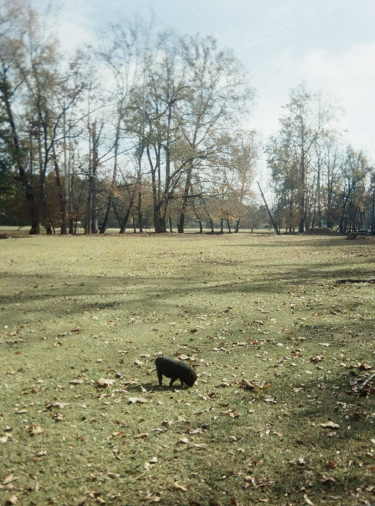
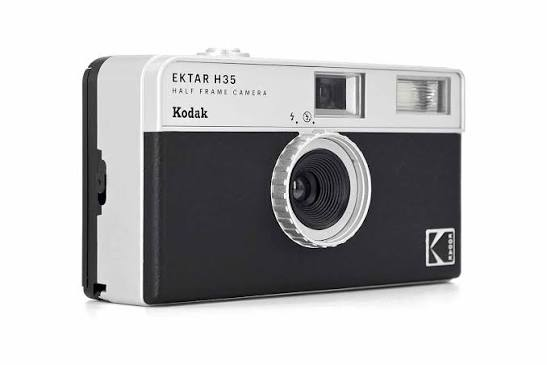
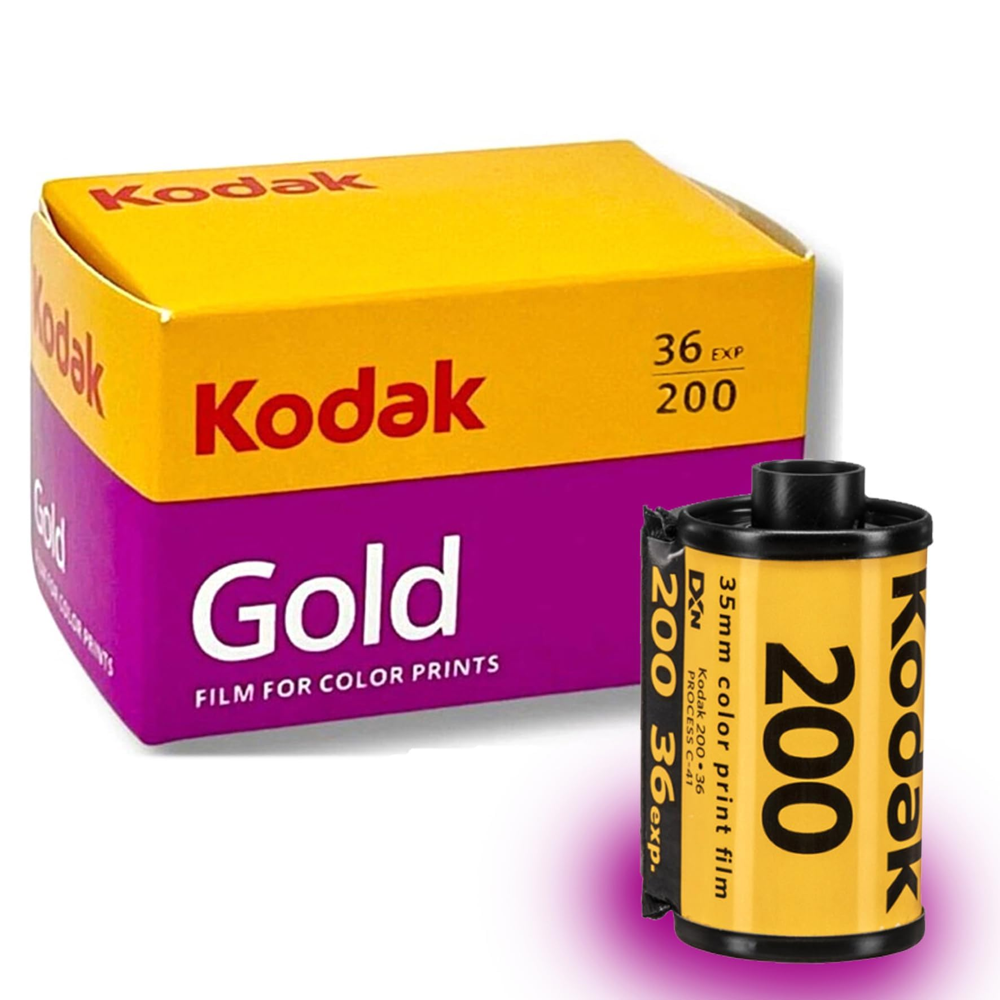
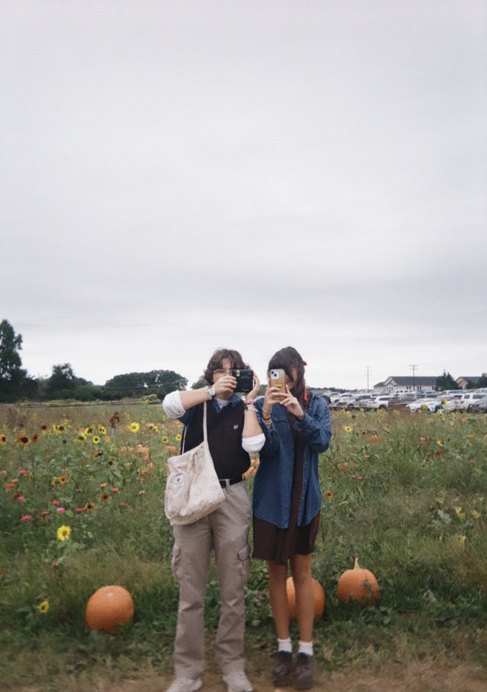

What Is Film Photography?
Film photography is a way of capturing pictures using a camera that records images on photographic film instead of a digital sensor. The film has to be developed before you can see the final photographs, which makes the process a little more exciting.
Unlike digital photography, film gives you a limited number of pictures per roll. You have to think about lighting, composition, and timing instead of taking fifty pictures of the same thing. Okay, maybe just five.
Film Rolls
Each roll has a limited number of exposures, so every show counts.
The Surprise
You usually wait until development to see how your photographs turned out.
Explore the other sections to learn about film photography, when and where to shoot, how to get started, and why this hobby is worth trying!
Who Is Behind the Camera?
I'm interested in film photography because I enjoy the creative side of capturing moments. I like the idea of turning ordinary places and experiences into photographs that feel meaningful (and look great).
Film photography is for anyone who enjoys experimenting with cameras, being creative, or collecting memories. You do not have to be a professional or own expensive equipment to start.
What Makes a Film Photographer?
- Curosity about lighting, colors, and composition.
- Patience when taking, and especially developing, pictures.
- A willingness to experiment and learn from mistakes.
You do not need to know everything about photography to enjoy it. Half the fun is figuring things out as you go.
When Is the Best Time to Take A Pic?
Film photography can be enjoyed all year, but different times of day and seasons create different moods. Lighting matters because film can be less forgiving when a scene is too dark or too bright.
Golden Hour
The time around sunrise or sunset often creates soft, warm light. It works well for portraits, outdoor scenes, and photographs with a nostalgic feel.
Cloudy Days
Clouds often direct sunlight and reduce harsh shadows. This can be useful for portraits and street photography.
Seasonal Inspiration
- Spring: Flowers, greenery, and brighter colors.
- Summer: Road trips, beach days, and long evenings.
- Fall: Colorful leaves and warm tones.
- Winter: Interesting shadows, bare trees, and quiet streets.
Where Should You Take Pictures?
You do not need a fancy destination to take good photographs. Interesting pictures can come from places you visit every day.
Nature
Parks, gardens, and walking trails offer natural light, greenery, flowers, and interesting textures.
City Streets
Buildings, signs, storefronts, and honestly just everyday life can make great subjects for street photography.

Other Places to Explore
- Coffee shops with interesting windows and lighting.
- Vintage shops with colorful displays.
- Beaches, lakes, and scenic outdoor locations.
Always respect people's privacy when photographing them, and ask permission when appropriate.
How Do You Get Started?
Getting started with film photography does not have to be complicated. A compatible film camera, a roll of film, and and some patience are enough to begin learning.
Step 1: Choose a Camera
Start with a camera you can afford and learn how it works. A simple point-and-shoot camera can be a good option for beginners so this would be a disposable film camera or the 30 dollar ones that Kodak sells!
Step 2: Load Your Film (For Non-Disposable Cameras)
Check the camera instructions and use film that is compatible with it. Follow the loading instructions carefully to avoid wasting a roll.


Step 3: Practice and Develop
- Pay attention to lighting and framing.
- Keep track of the film you use.
- Finish the roll and take it to a photo lab for development.
- Review your pictures and learn from the results.
Remember that mistakes happen. Sometimes the blurry or darker pictures ends up being your favorite one anyway :D!
Why Film Photography?
Film photography encourages you to slow down and pay attention to the little details around you. Instead of instantly checking a screen, you can focus on the moment you are trying to capture.
It Makes Moments Feel Special
Because each roll has a limited number of exposures, taking a picture can feel more intentional. Waiting for the photos to be developed also makes seeing the results more exciting.
It Encourages Creativity
Film types, lighting, camera settings, and composition can all change the final result. Experimenting with these details helps photographers develop their own style.

My Favorite Parts
- The nostalgic look of film photographs.
- The excitement of waiting for my pictures to be developed.
- Finding the beauty in ordinary moments.
Film photography is about enjoying the process and making memories that last longer than a camera roll on your phone.
AI Prompts and Credits
AI assistance was used to help with the information written for this website as well as to fix any bugs or give me any advice on what could be better.
Prompt 1: Information on the Website
"Give me the gist on what I should write for a website about my hobby which is film photography. I have to include sections such as What, Who, When, Where, How, Why and of course the AI Prompts section."
Prompt 2: Looking Over
"Can you look over this code and tell me what I could do to make it visually more appealing. Could you also check for any errors or places where I could condence my code?"
Image Credits
The images on my site are all my own film pictures that I have taken. The only two that don't belong from me are google images of the camera I use as well as the film I regularly buy.